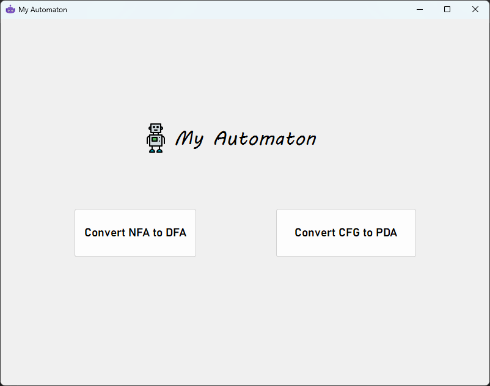
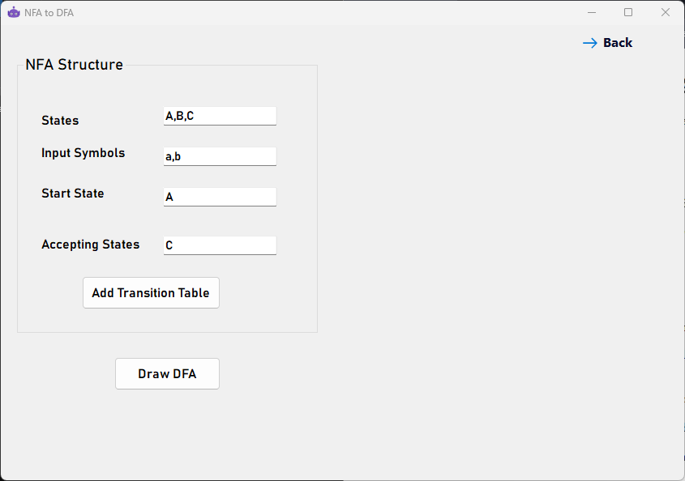
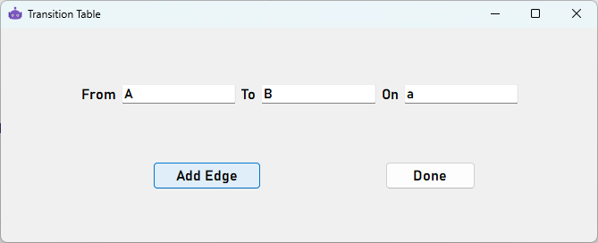
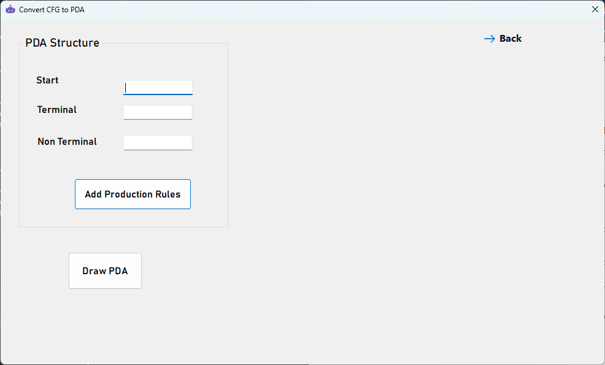
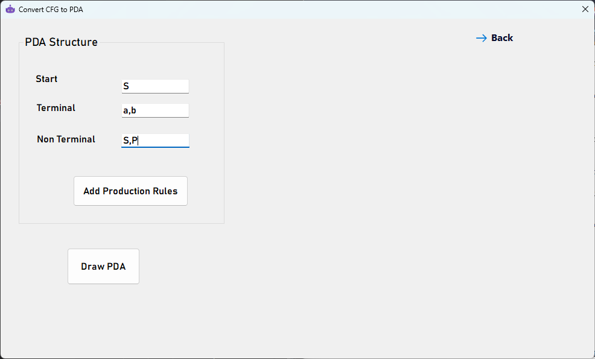
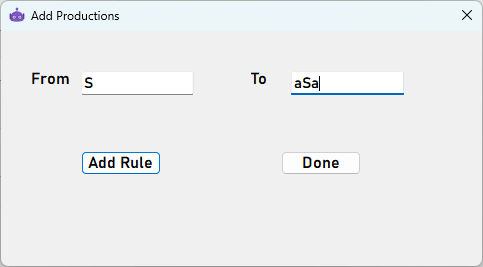

NFA to DFA
To input the NFA that is going be converted to DFA, you have to follow the following steps:
- Insert all of the required fields (States,Input Symbols,Start, and Accepting States) as shown in the following example 
- Click on "Add transition table" to add edges between states you want to connect 
- Add in the "From" field the source state as shown above
- Add in the "To" field the destination state as shown above
- Add in the "On" field the symbol that transfers from the source to the destination state as shown above
- Then ckick on the "Add edge" button
- Keep repeating the previous 3 steps until you have added all the edges of your NFA
- Whenyou are done, Click on the "Done" button
- Then click on "Draw DFA" to display the required DFA output

Your are now done! now click on the "Back" button to see how to convert CFG to PDA and click on the "Convert CFG to PDA" button
CFG to PDA
- Now we are going to repeat the exact same steps as before to convert the CFG to PDA 
- Insert all required fields as shown above
- Click on "Add Production Rules" 
- In the same as "Add transition table" add the all the required productions and click on "add edge" each time you want to add a production rule
- When you're done, Click on the "Done" button
- Then click on "draw pda" to display the generated PDA as shown below